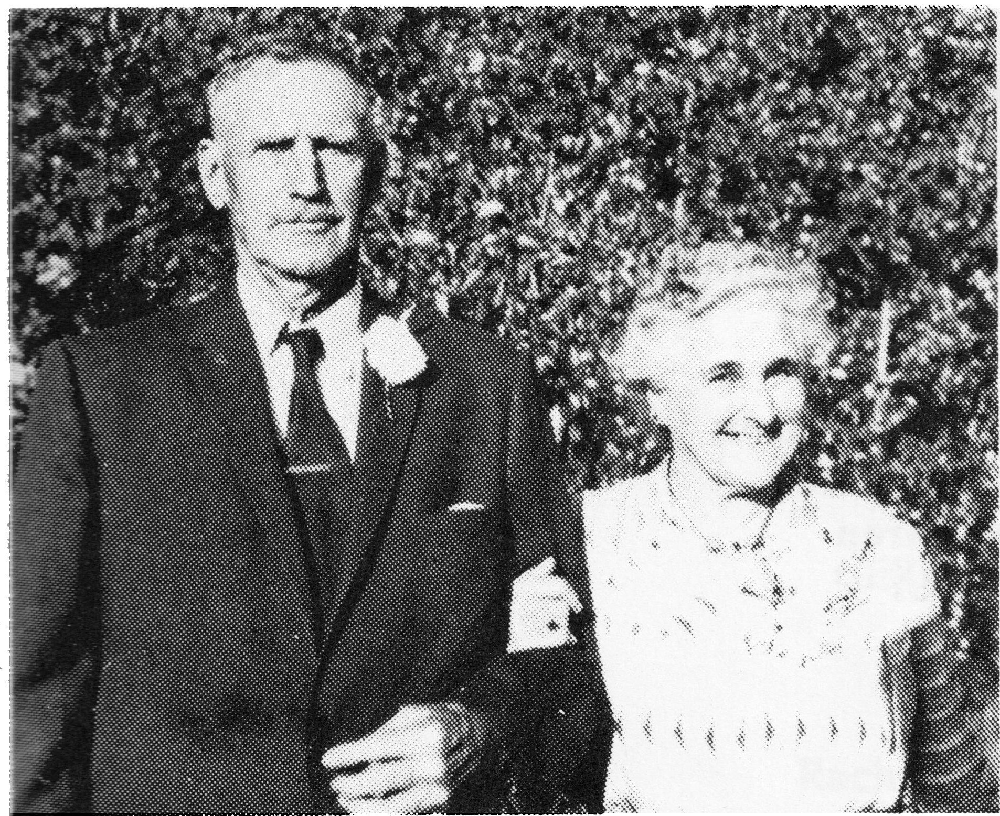

Alma Marie (L'Heureux) Alain
Alma, the eldest child of Moise and Sophie L'Heureux, was born on July 31, 1883 in Winnipeg, Manitoba. The following year, her brother, Arthur, was born. In 1885, the family made it's way toward Battleford. This was the first of several moves which Alma would experience during her growing years. Since the Northwest Rebellion was in progress, the family was forced to travel on and ended up in the Rocky Mountains.
When peace was restored to central Saskatchewan, they eventually jouneyed to Jackfish Lake. A few years later, Moise became Indian Agent at Delmas. They soon returned to their homestead at Jackfish Lake, which became home for Alma, and her eight brothers and six sisters in the years ahead.
While Alma was still a young girl, she was required to assist her father in his work of surveying the land. While he drove the team of oxen she sat in the cart and counted each revolution of the wheel. A colored rag tied to one of the spokes helped her with the monotonous task.

Alma also helped out in the home. With such a large family, there was always much to do whether it was cooking, cleaning, mending, or tending the children.
Then one day, she met Henri Alain. He had left his home in St. Ubald, PQ in 1900. Then after working in Sudbury and Duluth, Winsconsin, he came west in the fall of 1902 with his brother, Alphonse. Henri and Alma were married on April 14, 1907. They homesteaded at Ruddell for seven years, then moved to Delmas and farmed on a 1/2 section of land for fourteen years. He also worked for the D.N.R. at one time.
In 1914, Henri and Arthur L'Heureux bought the first threshing outfit in the Delmas district. It was powered by a 10-20 Mogul engine, which he used in the sawmill which he and Omer Michaud started in 1916. With a new sawmill for convenience, Henri decided to build a large house, brick on the outside and wood frame on the inside. Fred Dupond was the carpenter. With the building of the house and the threshing season at hand, there were twenty-two men working for Henri at one time. Henri later sold the Mogul engine to Archie Richard who was section foreman for the C.N.R. in Delmas.
Between 1926 and 1928, Henri and Alma began talking about moving east. In 1926-27, he bought one of the first pull-type combines with a 1527 case. He then traded in an 1833 case used to pull the combine, for a Case 110 Steam Engine in Saskatoon. He had the steam engine delivered directly to Veillardville, Saskatchewan, their new destination.
In 1928, Alma and Henri, with their eight children, moved to their new Homestead in the Hudson Bay area, then known as Poplar Siding. Train was the most convenient method of travel for them, so they loaded up their belongings with those of the other settlers. There were three boxcars of goods and one flat car of machinery. While unloading the Case, they soon found out that they should have blocked the flat car. Before they knew what happened, the engine was on its side and a C.N.R. wrecker was used to right it.
It was all bush country and land was available for their sons, too. Alma's memory of those early years was that there was nothing but bush, mud and mosquitoes! Henri broke a 1/2 section to farm, using his new equipment. There was no power or telephone until 1959. Water was hauled from a creek and later they had a well. He also had a sawmill during their first years at Veillardville and farmed until his retirement.
Each of their boys also farmed in the district. Moise and Louis both took homesteads. Rolland's family still lives on the homestead which his parents had taken upon their arrival in Veillardville.
Henri and Alma spent their retiring years at Veillardville. Following a stroke in 1960, Henri was taken to the Geriatric Centre in Melfort. He died on December 19, 1967.
Alma passed away in Hudson Bay Union Hospital on Dec. 15, 1982, where she had been a patient since May, 1978.
Rolland has also passed away at Hudson Bay on Novemer 13, 1986.
All three are buried in the Roman Catholic Cemetary at Hudson Bay, Sask.
Alma L'Heureux Alain
| NAME | BORN | MARRIED | SPOUSE | BOY | GIRL | DIED |
|---|---|---|---|---|---|---|
| Alma | July 31, 1883 | Apr. 8, 1907 | Henry Alain | 4 | 4 | Dec. 15, 1982 |
| Henry | Dec. 19, 1967 | |||||
| ALMA'S FAMILY | ||||||
| Moise | Jan. 28, 1908 | Oct. 20, 1933 | Verna Cockwill | 0 | 2 | |
| Louis | Mar. 6, 1909 | Apr. 12, 1937 | Clara Lessard | 2 | 6 | |
| Yvonne | Mar. 9, 1911 | Raymond Turcotte | (4 infants died) | |||
| Raymond | Deceased | |||||
| Remarried | Harry Wyman | 0 | 0 | Deceased | ||
| Remarried | Pat O'Brien | 0 | 0 | , 1984 | ||
| Rolland | Oct. 27, 1913 | Apr. 29, 1943 | Yvonne Veillard | 3 | 4 | Nov. 13, 1986 |
| Mary Paule | Oct. 27, 1915 | Jan. 7, 1933 | Angus Menzies | 4 | 3 | |
| Angus | Mar. 12, 1983 | |||||
| Edithe | Dec. 21, 1917 | Oct. 26, 1945 | Gene Lessard | 3 | 1 | |
| Bertha | Mar. 20, 1919 | Dec. 8, 1937 | Paul Marsollier | 3 | 1 | |
| Paul | Oct. 6, 1920 | Feb. 15, 1941 | Reine Cartier | 3 | 3 | |
| Alma's Grandchildren | ||||||
| MOISE'S FAMILY | ||||||
| Dawn | Jan. 25, 1936 | Nov. 24, 1956 | Ken Spark | 0 | 2 | |
| Lynn | June 3, 1944 | Feb. 20, 1966 | Paul Bushey | 1 | 0 | |
| Alma's Great Grandchildren | ||||||
| Moise's Grandchildren | ||||||
| DAWN'S FAMILY | ||||||
| Wendy | Feb. 3, 1958 | May 5, 1973 | Mel Therres | 1 | 1 | |
| Remarried | Aug. 11, 1984 | Larry McCamon | ||||
| Shawna | Mar. 3, 1960 | June 24, 1978 | Ralph Upton | 1 | ||
| Lynn's Family | ||||||
| Todd | Nov. 22, 1968 | |||||
| Alma's Great Great Grandchildren | ||||||
| Moise's Great Grandchildren | ||||||
| Dawn's Grandchildren | ||||||
| WENDY'S FAMILY | ||||||
| Carlyn | Oct. 2, 1975 | |||||
| Christy | Aug. 29, 1976 | |||||
| Shawna's Family | ||||||
| Lonny | Feb. 15, 1980 | |||||
| Alma's Grandchildren | ||||||
| LOUIS' FAMILY | ||||||
| Marlyne | Aug. 21, 1938 | May 24, 1958 | Adolf Reindl | 2 | 2 | |
| Maxine | Aug. 28, 1939 | Oct. 28, 1961 | Elliott Prentice | 4 | 1 | |
| Marcella | Apr. 5, 1944 | Oct. 9, 1971 | Richard Sevigny | 3 | 0 | |
| Bruce | Nov. 12, 1946 | Oct. , 1968 | Pat Olshonoski | 0 | 0 | |
| Bernadette | June 5, 1948 | Apr. 1, 1966 | Don Adrian | 0 | 2 | |
| Rachelle | Aug. 11, 1951 | Oct. 17, 1967 | Dana Toews | 2 | 1 | |
| Michelle | Apr. 19, 1956 | Aug. 25, 1979 | Ian Pepper | 1 | 1 | |
| Joe | Feb. 5, 1959 | July 21, 1984 | Evonne Salamandyk | 1 | ||
| Alma's Great Grandchildren | ||||||
| Louis' Grandchildren | ||||||
| MARLYNE'S FAMILY | ||||||
| Robert | Sept. 30, 1958 | Oct. 11, 1980 | Caren Rathie | 2 | ||
| Geraldine | Oct. 8, 1959 | May 16, 1981 | Brian Law | 1 | 1 | |
| Louella | Apr. 14, 1961 | Apr. 28, 1984 | Brad Sim | |||
| (divorced) | ||||||
| Mark | Sept. 13, 1962 | July 27, 1985 | Keeran Reed | 1 Matthew | ||
| MAXINE'S FAMILY | ||||||
| Loren | July 28, 1962 | |||||
| Adelle | Aug. 17, 1963 | Jan. 14, 1984 | Justin Scott | |||
| Blair | Aug. 15, 1964 | |||||
| Cory | Oct. 7, 1965 | |||||
| Sean | Sept. 26, 1973 | |||||
| MARCELLA'S FAMILY | ||||||
| Paul | July 30, 1974 | |||||
| Camille | Sept. 15, 1977 | |||||
| Martin (adpt.) | Dec. 21, 1978 | |||||
| BERNADETTE'S FAMILY | ||||||
| Kendall | Sept. 18, 1966 | |||||
| Shantell | Aug. 28, 1973 | |||||
| RACHELLE'S FAMILY | ||||||
| Lana | May 16, 1968 | Dave Bury | 2 Boys Kevin, Kristopher | 1-Kassandra | ||
| John | July 16, 1969 | |||||
| Todd | Sept. 21, 1971 | |||||
| MICHELLE'S FAMILY | ||||||
| Cassidy | July 31, 1981 | Cody | ||||
| Cody | May 5, 1983 | |||||
| JOE'S FAMILY | ||||||
| Joe | Feb. 12, 1985 | 1 | 1 | |||
| Alma's Great Great Grandchildren | ||||||
| Louis' Great Grandchildren | ||||||
| Marlyne's Grandchildren | ||||||
| ROBERT'S FAMILY | ||||||
| Jason | May 21, 1984 | |||||
| Kyle | Aug. 8, 1985 | |||||
| GERALDINE'S FAMILY | ||||||
| Ryan | Feb. 13, 1983 | |||||
| Breanne | Nov. 10, 1984 | |||||
| Rachelle's Grandchildren | ||||||
| LANA'S FAMILY | ||||||
| Kevin | Sept. 27, 1985 | |||||
| Alma's Grandchildren | ||||||
| ROLLAND'S FAMILY | ||||||
| Simone | May 5, 1944 | Dec. 24, 1966 | Howard Shouldice | 0 | 2 | |
| Maurice | Oct. 28, 1951 | May 23, 1984 | Gloria Stang | 1 | ||
| Roger | Apr. 8, 1953 | |||||
| Denis | Apr. 16, 1955 | Jan. 24, 1984 | Donna Nash | 3 | 1 | |
| Rosanne | Apr. 23, 1957 | Apr. 11, 1985 | Larry Pavloff | 1 | 1 | |
| Jeannine | July 28, 1958 | 1 | 1 | |||
| Lisa | May 13, 1963 | |||||
| Alma's Great Grandchildren | ||||||
| Rolland's Grandchildren | ||||||
| SIMONE'S FAMILY | ||||||
| Jody | July 9, 1967 | |||||
| Karlee | Oct. 21, 1975 | |||||
| Alma's Grandchildren | ||||||
| MARY PAULE'S FAMILY | ||||||
| Ronald | Jan. 24, 1933 | July 20, 1963 | Jean Bailey | 1 | 1 | |
| Darlene | Jan. 7, 1937 | Feb. 16, 1957 | Roman Marchina | 1 | 4 | |
| Neil | July 31, 1942 | Jan. 23, 1969 | Anne Rudolivetch | |||
| Bob | July 1, 1946 | May , 1971 | Trudy Scoretz | 1 | 1 | |
| Keith | July 11, 1950 | May 31, 1975 | Edith Wall | 2 | 1 | |
| Joanne | Sept. 23, 1955 | |||||
| Brenda | July 31, 1957 | Sept. 1, 1979 | Robin Jackson | 1 | ||
| Alma's Great Grandchildren | ||||||
| Mary Paule's Grandchildren | ||||||
| RONALD'S FAMILY | ||||||
| Kari Lou | Oct. 30, 1964 | |||||
| Kyle | Mar. 1, 1967 | |||||
| DARLENE'S FAMILY | ||||||
| Ramona | July 19, 1959 | Oct. 10, 1981 | Bruce Haroldson | / | ||
| Bruce | Dec. , 1981 | |||||
| Gina | Aug. 24, 1960 | May , 1986 | Graham Holliday | / | ||
| Laura | June 4, 1963 | Stan | / | |||
| Mario | May 6, 1965 | |||||
| Carla | Jan. 13, 1968 | |||||
| BOB'S FAMILY | ||||||
| Nicole | July 15, 1971 | |||||
| Trevor | July 31, 1972 | |||||
| KEITH'S FAMILY | ||||||
| Aidan | Nov. 27, 1978 | |||||
| Todd | Mar. 23, 1983 | |||||
| Kendra | Mar. 23, 1983 | |||||
| JOANNE'S FAMILY | ||||||
| Kristy Lynne | May 31, 1976 | |||||
| BRENDA'S FAMILY | ||||||
| Aaron | July 31, 1984 | |||||
| Kelly | June 10/1988 | |||||
| Alma's Grandchildren | ||||||
| EDITHE'S FAMILY | ||||||
| Wayne | Aug. 23, 1946 | Dec. , 1966 | Lynn LeBlue | 2 | ||
| Carol | May 25, 1951 | Dec. , 1978 | Mike Todor | 1 | ||
| Lee | Nov. 5, 1955 | PAM | / / | |||
| Blair | Mar. 2, 1958 | |||||
| Alma's Great Grandchildren | ||||||
| Edithe's Grandchildren | ||||||
| WAYNE'S FAMILY | ||||||
| Shonna | July 22, 1968 | / / | ||||
| Melanie (adpt.) | Aug. 1, 1979 | |||||
| CAROL'S FAMILY | ||||||
| Rebecca | June 23, 1979 | / | ||||
| Alma's Great Great Grandchildren | ||||||
| Edithe's Great Grandchildren | ||||||
| Wayne's Grandchildren | ||||||
| SHONNA'S FAMILY | ||||||
| Nicole | Jan. 18, 1983 | |||||
| Alma's Grandchildren | ||||||
| BERTHA'S FAMILY | ||||||
| Norbert | July 3, 1939 | Apr. 15, 1961 | Shirley Allen | 4 | ||
| Roger | Feb. 24, 1941 | Jan. 8, 1974 | Suzanne Ferland | 1 | 1 | Brigitte |
| Allen | Sept. 6, 1948 | Apr. 15, 1971 | Paulette Tomychuk | 1 | 1 | born Dec 30/1999 |
| Cathy | Mar. 16, 1955 | Dec 14 1987 | John Brophy | 1 | 1 | Joseph born Feb 4/ |
| Alma's Great Grandchildren | ||||||
| Bertha's Grandchildren | ||||||
| NORBERT'S FAMILY | ||||||
| Michelle | Jan. 12, 1962 | Gordon Frank | Feb 20 1987 | divorced | remarri | |
| Marcia | Mar. 10, 1963 | married Gary Moss | Tessa born | May 15 Chelsea wa | ||
| June 2/91 | ||||||
| Melinda | Apr. 21, 1964 | born to Michelle & | ||||
| Melissa | Feb. 29, 1968 | McDonale | ||||
| ROGER'S FAMILY | ||||||
| Clinton (adpt) | Feb. 28, 1976 | |||||
| Renee | May 28 1976 | |||||
| ALLEN'S FAMILY | ||||||
| Cameron | Dec. 9, 1973 | |||||
| Gillian | Oct. 8, 1975 1976 | |||||
| / 3 | ||||||
| Alma's Grandchildren | ||||||
| PAUL'S FAMILY | ||||||
| Gabrielle | July 7, 1941 | July 29, 1961 | Mervin Meyers | 1 | 2 | |
| Lorne | Jan. 4, 1944 | Jan. 4, 1966 | Veanna LeBlue | 2 | 0 | |
| Shirley Anne | Apr. 11, 1945 | Oct. 9, 1965 | Gerry Pelletier | 1 | 1 | |
| Lloyd | Aug. 25, 1947 | Apr. 3, 1971 | Sandra Oliver | 1 | 1 | |
| Donna | Jan. 25, 1960 | July 25, 1981 | Gerald Sawatzky | 1 | ||
| Kerry | Aug. 7, 1962 | |||||
| Alma's Great Grandchildren | ||||||
| Paul's Grandchildren | ||||||
| GABRIELLE'S FAMILY | ||||||
| Sandra | Dec. 24, 1961 | Aug. 11, 1984 | Mark Murray | |||
| Darwin | Nov. 18, 1963 | |||||
| Shelly | Dec. 4, 1964 | |||||
| LORNE'S FAMILY | ||||||
| Corey | July 26, 1971 | |||||
| Christopher | Dec. 25, 1973 | |||||
| SHIRLEY ANNE'S FAMILY | ||||||
| Robin | May 29, 1969 | |||||
| Leanne | Mar. 30, 1973 | |||||
| LLOYD'S FAMILY | ||||||
| Brian | Jan. , 1972 | |||||
| Sharla | Feb. , 1974 | |||||
| DONNA'S FAMILY | ||||||
| Taunia | Nov. 24, 1984 | |||||
| TOTAL DESCENDANTS | 172 |
| LIVING | 160 |
| DECEASED | 12 |